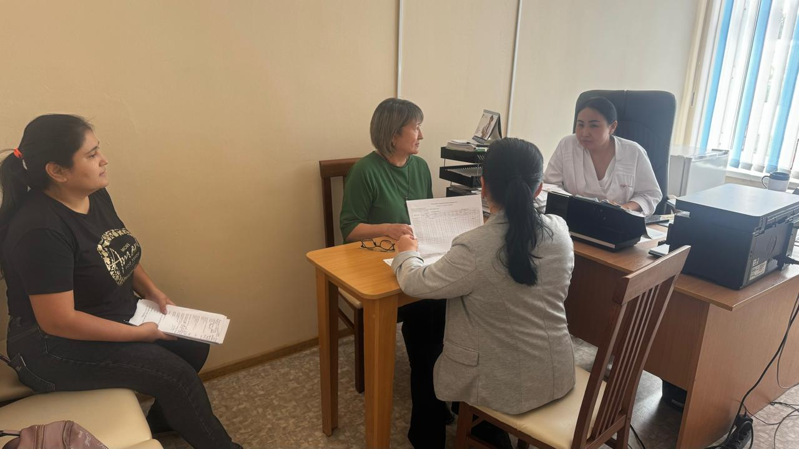
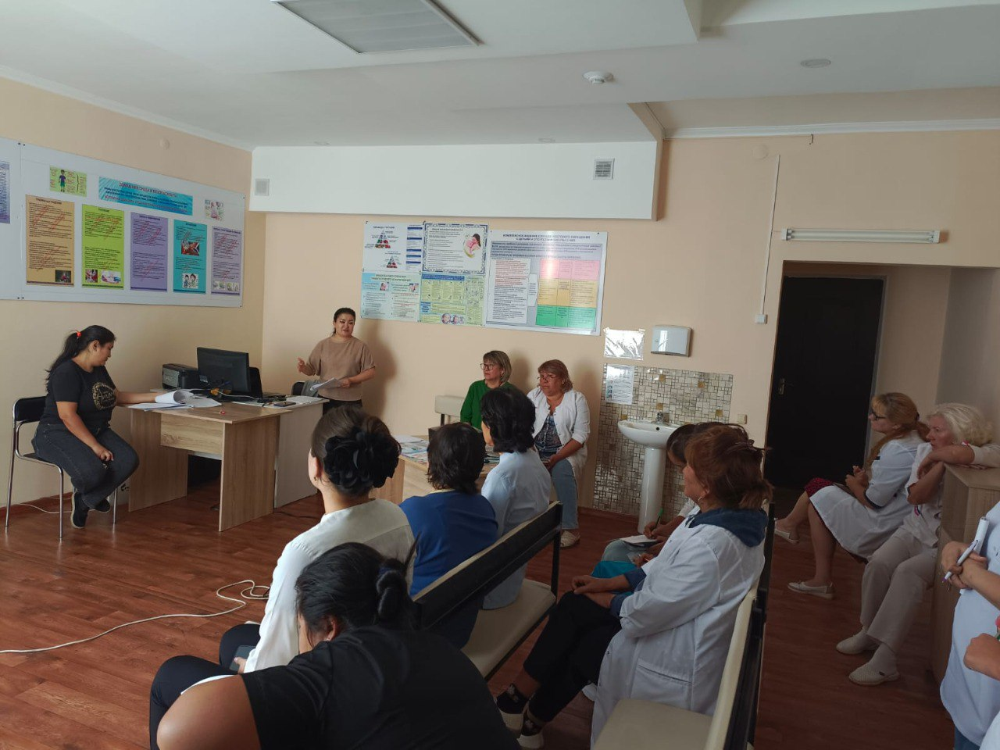

Жаңалықтар
Туберкулезге қарсы көмек сапалы болуы үшін
12 Қыркүйек 2024

Біздің орталықтың қалалық мониторинг және бағалау тобының мамандары «Менің отбасылық амбулаториям» ЖШС-не жоспарлы мониторингтік сапар жасады.

Сапар барысында негізгі туберкулезге қарсы іс-шараларды бағалау, учаскелік терапевтермен/ЖПД және мейіргерлермен сұхбаттар, есепке алу және есеп беру құжаттарын (ҚМИС, ҰДБ, МТДҰ) зерделеу үшін медициналық ақпараттық жүйелерде жұмыс жүргізілді, сондай-ақ қағаз форматында жүргізілетін құжаттама зерделеніп, практикалық және әдістемелік көмек көрсетілді.
Мониторинг қорытындысы бойынша кеңес өткізілді, онда туберкулезге қарсы іс-шараларды іске асыруға қол жеткізу бойынша анықталған проблемалар мен тәуекелдер талқыланды, мәселелерді шешу жолдары мен ұсыныстар берілді.
#шқофпо #вкофпц #ШҚОфтизиопульмонологиялықорталығы #вкофтизиопульмонологическийцентр #вко #бізтуберкулездіжеңеаламыз #мыможемпобедитьтуберекулез #стоптуберкулез #stoptb #туберкулез #qaztbstop #ннцфмзрк #nncf_mz_rk #kaf2020 #мио #моясемейнаяамбулатория #группамио #национальнаяпротивотуберкулезнаяпрограмма #противотуберкулезнаяпомощь #мониторингиоценкапротивотуберкулезнойпомощи
